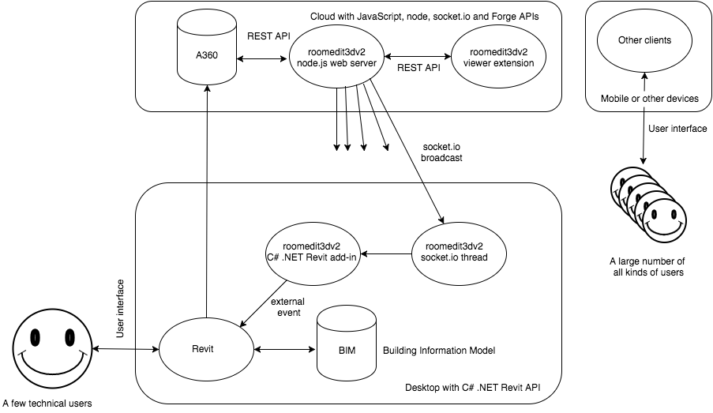

Forge Viewer extension to move building elements and update the Revit BIM in real-time using socket.io.
This is a node.js web server implementing a Forge Viewer extension.
Roomedit3dv3 is based
on Philippe Leefsma's
node.js-based boilerplate projects for the Autodesk Forge Web Services APIs.
The following Forge APIs and components are used to manipuate a Revit BIM model:
Just as Philippe original boilerplate code, this sample illustrates use of the following Forge npm packages:
For a full detailed description of the steps required to set up your own Forge account, install and modify the sample to use your credentials and deploy as a local server or on a platform such as Heroku, please refer to Philippe's original documentation for the boilerplate prerequisites and sample setup.
In brief:
This project uses Webpack and NPM packages to build and generate the frontend code, so an extra build step is required.
On Mac OSX and Linux, run the following in Terminal:
> npm install
> export FORGE_CLIENT_ID=<<YOUR CLIENT ID FROM DEVELOPER PORTAL>>
> export FORGE_CLIENT_SECRET=<<YOUR CLIENT SECRET>>
> npm run build-dev (this runs a dev build and webpack in --watch mode)
> npm run dev (runs the node server, do in another terminal if you want to keep the webpack watcher running)
Under Windows, replace export by set.
Open your browser at http://localhost:3000.
Important: the npm start command is intended for PRODUCTION with HTTPS (SSL) secure cookies.
To run a production build, you can use start command:
> npm start
This will run a production build and start the server. The production build code is minified and function names are mangled which make it much smaller and impractical for debugging or reverse engineering.
To deploy on Heroku, simply click on the button below, at the Heroku Create New App page:

The result displays a treeview of the OSS storage that lets you upload designs and perform actions from the context menu:

To load a design in the viewer:
To download and view files stored in the OSS, you need a valid callback url to achieve 3-legged oauth authentication.
I recommend you create two separate sets of Forge API keys, one for DEVELOPMENT and one for PRODUCTION, because each set has a different callback url.
To run the project locally (using the DEV API keys):

Run the following commands (mind the DEV!):
> npm install
> set FORGE_DEV_CLIENT_ID=<<YOUR DEV CLIENT ID FROM DEVELOPER PORTAL>>
> set FORGE_DEV_CLIENT_SECRET=<<YOUR DEV CLIENT SECRET>>
> npm run build-dev
> npm run dev
To run in production, the callback url defined for your Forge App needs to match the host url, so, for example, if you run your app from https://mydomain.com:
> npm install
> set HOST_URL=https://mydomain.com
> set FORGE_CLIENT_ID=<<YOUR CLIENT ID FROM DEVELOPER PORTAL>>
> set FORGE_CLIENT_SECRET=<<YOUR CLIENT SECRET>>
> npm start
To deploy this project to Heroku, simply click on the button below, at the Heroku Create New App page:
MyApp would map to HOST_URL=https://MyApp.herokuapp.com.
The result will look like this, displaying a treeview of your Autodesk Cloud storage that lets you upload designs and perform actions from the context menu:

To load a design in the viewer:
The roomedit3dv3 viewer extension enables interactive selection and movement of selected BIM elements in the model on screen.
The updated elements and their new locations are transferred back from the viewer client to the web server via a REST API call.
The server in turn uses socket.io to broadcast the updates to the rest of the universe.
This broadcast is picked up by the Roomedit3dApp C# .NET Revit add-in client.
This version supersedes its precursor roomedit3d, which was hardwired for a specific model.
In roomedit3dv3, any model can be selected.
Todo: add a project identifier to the broadcasts to enable the C# add-in broadcoast receivers to igonre all messages not pertaining to the current Revit BIM.
The selected element is identified via its Revit UniqueId.
Roomedit3dv3 is a member of the suite of samples connecting the desktop and the cloud.
Each of the samples consists of a C# .NET Revit API desktop add-in and a web server:
The Roomedit3dTranslationTool implements a viewer extension that enables the user to select a component and interactively move it around on the screen, defining a translation to be applied to it and communicated back to the source CAD model.

The Forge Viewer itself provides viewing functionality only, no editing.
The pre-defined Forge communication path is one-way only, from the desktop to the cloud, from the source 'seed' CAD model to the translated Forge API bucket and JSON data bubble stream.
This sample demonstrates an interactive modification of the three.js graphics presented by the viewer and a communication path to send updated element location information back to the desktop product in real time.
In this case, the source desktop CAD model is a Revit BIM, and the modifications applied are building element translations.
The viewer client in the browser uses fetch to implement a REST API POST call to communicate the modified element external id and translation back to the node.js server.
The node.js server uses a socket.io broadcast to notify the desktop of the changes.
The dedicated C# .NET Revit add-in Roomedit3dApp subscribes to the socket.io channel, retrieves the updating data and raises an external event to obtain a valid Revit API context and apply it to the BIM.
This sample is licensed under the terms of the MIT License. Please see the LICENSE file for full details.